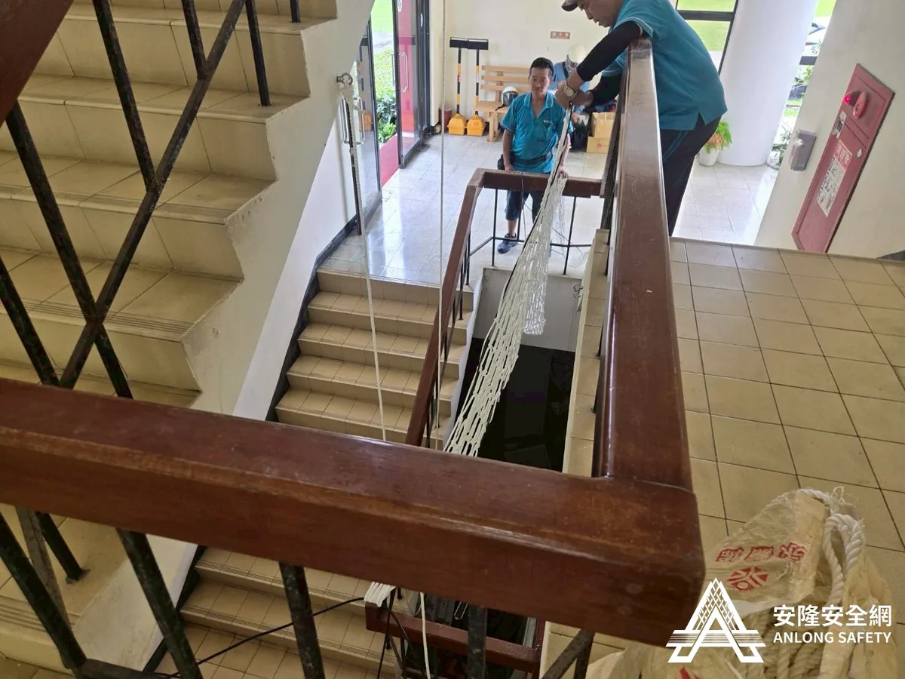
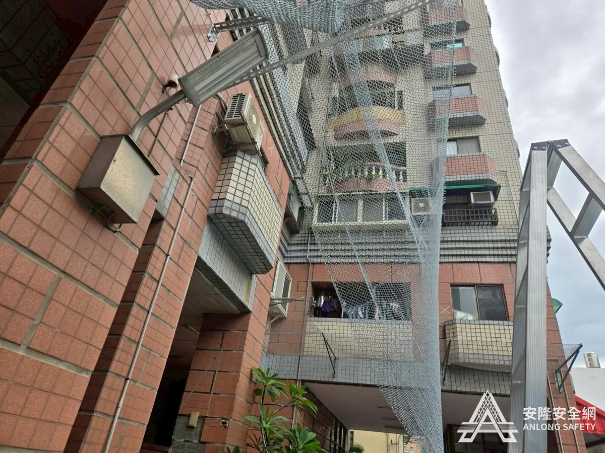
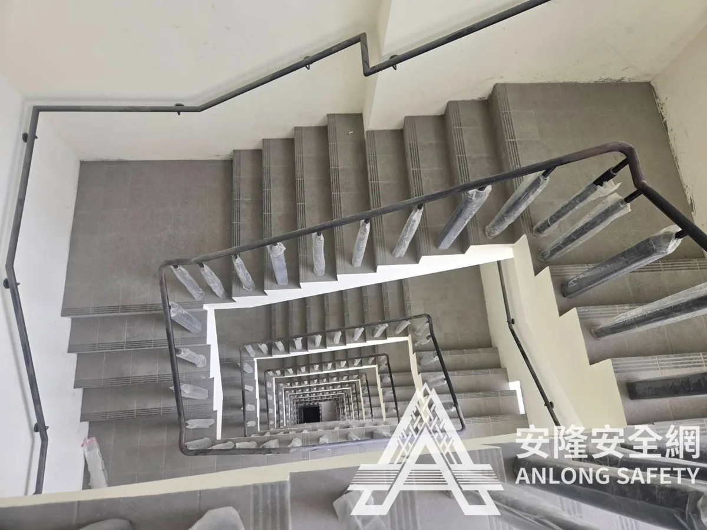
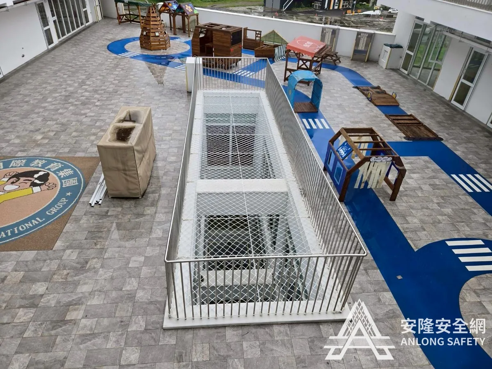
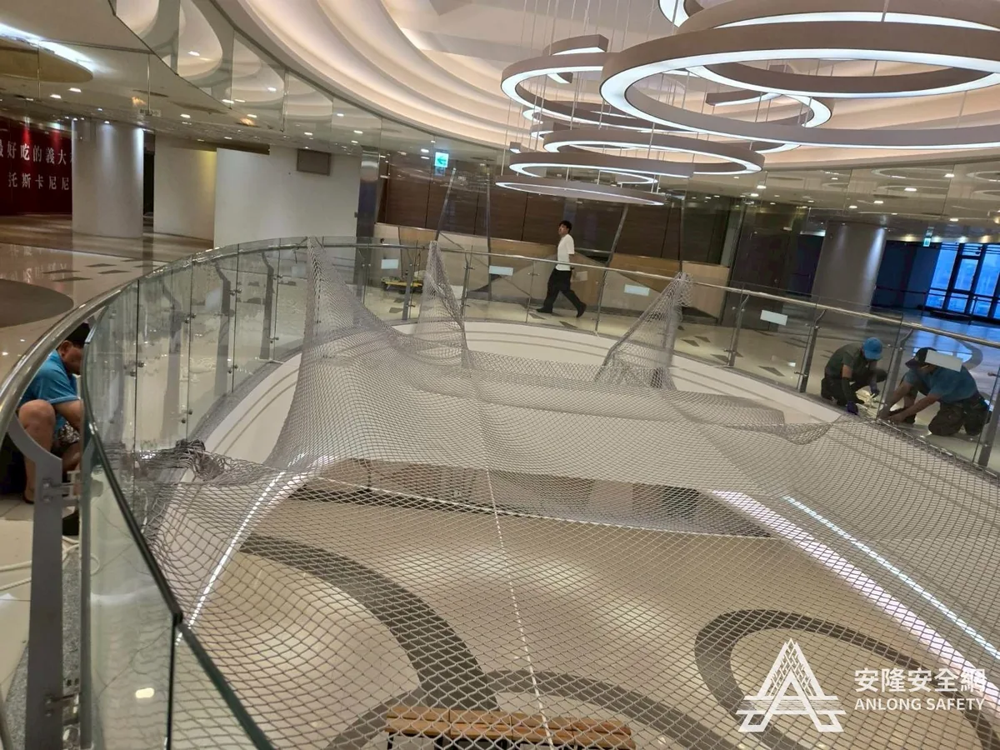
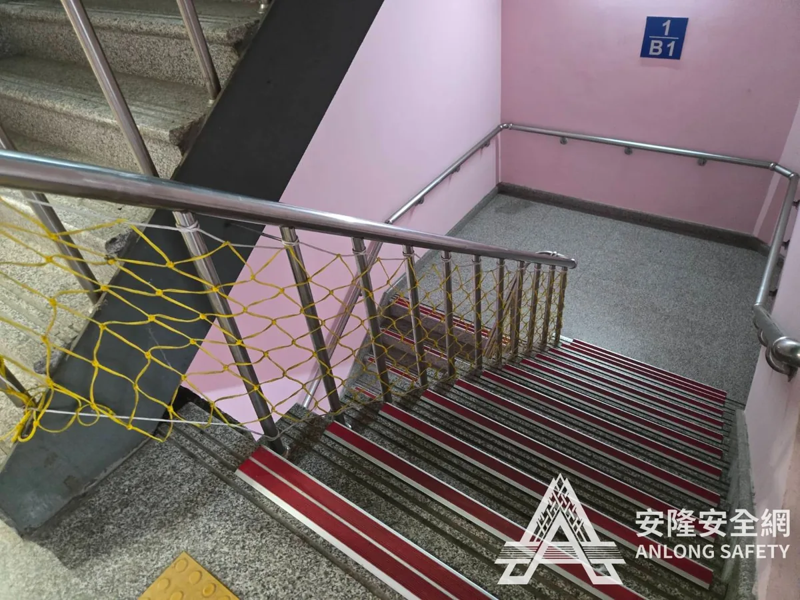
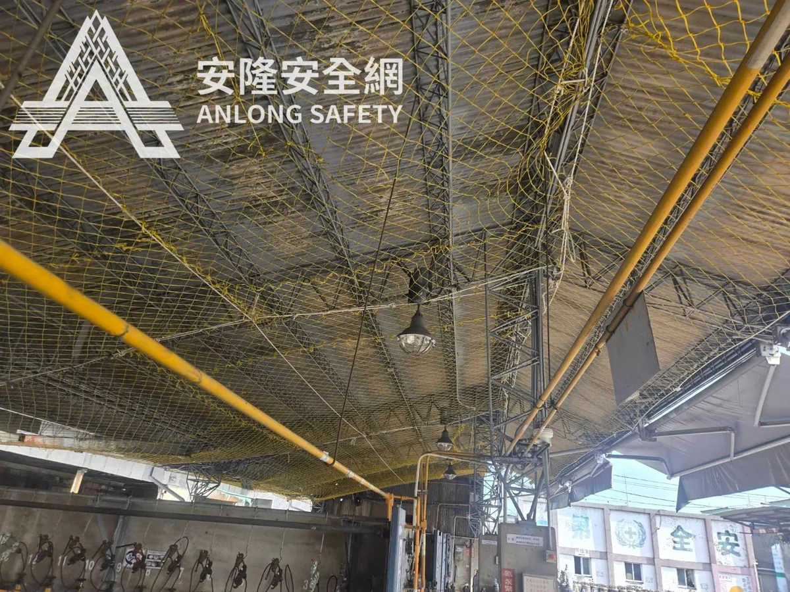
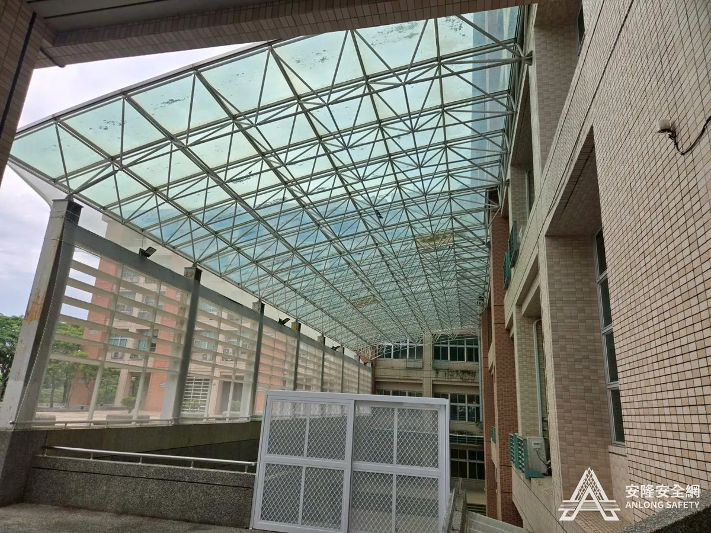
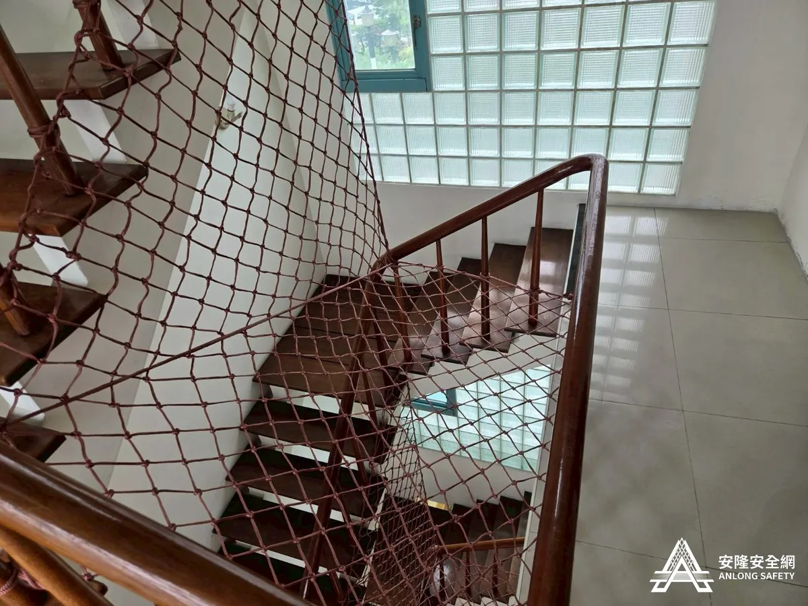
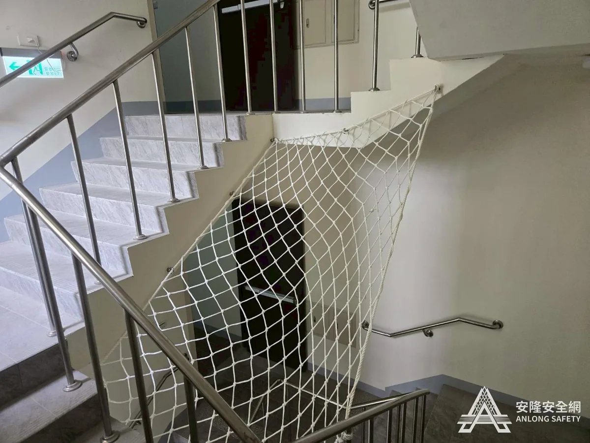

已通過驗收屏東科技大學
校園樓梯安全網
白色尼龍 5mm10×10cm 網目承重 400kg
校園安全不只是人員霸凌，安全環境也是最基本的配備，每位家長才可以安心把孩子交給學校。
查看完整案例 →從學校、公部門到商業空間，每一個指標案場都通過嚴格驗收，是安隆專業與品質的最佳證明。

已通過驗收校園樓梯安全網
校園安全不只是人員霸凌，安全環境也是最基本的配備，每位家長才可以安心把孩子交給學校。
查看完整案例 →
已通過驗收社區防磁磚安全網
防止磁磚剝落砸傷人員車輛。依 CNS14252 標準做拉力測試，PE 24 股 2×2cm 網目可承受 100 公斤以上拉力。
查看完整案例 →
已通過驗收逃生梯安全網
半戶外樓梯改採白鐵壁虎固定牆面，不受木扶手老化影響，防鏽蝕、安全更有保障。
查看完整案例 →
已通過驗收逃生梯與天井安全網
逃生梯頂樓平面網加上樓梯到地下室立面網，雙重防護，給兒童安全最完整的保障。
查看完整案例 →
已通過驗收五樓天井安全網
手扶高度已符合法規，但因人流頻繁，管理公司仍加做一層防護，把人員安全擺在第一考量。
查看完整案例 →
已通過驗收逃生梯安全網舊換新
政府停車場於經營權重新投標後全面更新設備，安全防護也煥然一新。
查看完整案例 →
已通過驗收廠房屋頂更換臨時安全網
石棉瓦更換期間防止人員墜落。一條龍安裝、拆除及回收，工程勞安資料齊全，讓客戶 100% 安心。
查看完整案例 →
已通過驗收廣場立面防鳥網
業界最高規格防鳥網，兼具美觀與耐用；施工前以德國凱馳工業高壓清水機徹底清除鳥污垢。
查看完整案例 →
已通過驗收L 型樓梯安全網
住家樓梯常有人走動、邊角又多，所以每層樓都安裝。特多龍材質耐用不易腐蝕，適合長期居住使用。
查看完整案例 → 已通過驗收
已通過驗收
社區天井安全網
依 CNS14252 於 2 樓及 4 樓安裝，承重遠優於法規 150 公斤標準，給住戶超規格的安全保障。
查看完整案例 →
已通過驗收樓梯天井安全網（每層一件）
離島社區同樣享有完整服務。每層安裝一件，壁虎每 75–85cm 固定一組，通過 CNS14252 拉力測試。
查看完整案例 →到場測量完全免費，工程師約 7 日內可到府。歡迎來電、LINE 或填寫表單聯絡我們。